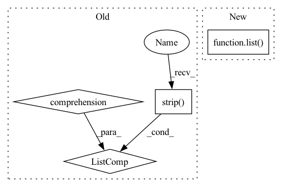

Pattern ID :20781
Before Change
with open(table_file, encoding="utf-8") as f:
lines = f.readlines()
header = lines[0].strip().split(",")
data = [line.strip().split(",") for line in lines[1:]]
return header, data
def _parse_answer_coordinates(answer_coordinate_str):After Change
// the first line is header
header = list(table_data.columns)
for row_data in table_data.values:
rows.append([str(_) for _ in list( row_data) ])
return header, rows
In pattern: SUPERPATTERN
Frequency: 4
Non-data size: 4
Instances Fragment ID: 66947519
Project Name: hkunlp/unifiedskg
Commit Name: 0d47cd9382f0a3d17c70701056f399706ee3b698
Time: 2022-01-31
Author: tianbaoxiexxx@gmail.com
File Name: tasks/msr_sqa.py
M Class Name: AnonimousClass
N Class Name: AnonimousClass
M Method Name: _load_table_data(1)
N Method Name: _load_table_data(1)
M Parent Class:
N Parent Class:
M File Name: tasks/msr_sqa.py
N File Name: tasks/msr_sqa.py
M Start Line: 64
M End Line: 68
N Start Line: 66
N End Line: 73
Before Change
with open(table_file, encoding="utf-8") as f:
lines = f.readlines()
header = lines[0].strip().split(",")
data = [line.strip().split(",") for line in lines[1:]]
return header, data
def _parse_answer_coordinates(answer_coordinate_str):After Change
// the first line is header
header = list(table_data.columns)
for row_data in table_data.values:
rows.append([str(_) for _ in list( row_data) ])
return header, rows
Fragment ID: 66947525
Project Name: huggingface/datasets
Commit Name: 55924c5e3b823a3b1206269bb0892cd3a9508570
Time: 2022-10-03
Author: 47296835+Timothyxxx@users.noreply.github.com
File Name: datasets/msr_sqa/msr_sqa.py
M Class Name: AnonimousClass
N Class Name: AnonimousClass
M Method Name: _load_table_data(1)
N Method Name: _load_table_data(1)
M Parent Class:
N Parent Class:
M File Name: datasets/msr_sqa/msr_sqa.py
N File Name: datasets/msr_sqa/msr_sqa.py
M Start Line: 65
M End Line: 69
N Start Line: 66
N End Line: 73
Before Change
"""
find papers for a query with and operator
"""
keywords = [elt.strip() for elt in re.split(regex_and_operators,query)]
selected_papers_fnames = []
selected_papers = {}
for fname in papers:After Change
"""
selected_papers = self.sql_manager.search_with_AND_operator(query)
selected_papers_fnames = list( selected_papers)
return selected_papers, selected_papers_fnames
def get_papers_with_semantics(self, query: str) -> tuple:
""" Fragment ID: 66947523
Project Name: yassinekdi/naimai
Commit Name: a64246fc1ae320f458cc998c389f44efdb386bd6
Time: 2022-08-03
Author: keptsa@yahoo.fr
File Name: pipelines/querier.py
M Class Name: Querier
N Class Name: Querier
M Method Name: get_papers_with_AND_operator(2)
N Method Name: get_papers_with_AND_operator(3)
M Parent Class:
N Parent Class:
M File Name: pipelines/querier.py
N File Name: pipelines/querier.py
M Start Line: 147
M End Line: 161
N Start Line: 131
N End Line: 132
Before Change
find papers for a query with or operator
"""
keywords = [elt.strip() for elt in re.split(regex_or_operators,query)]
selected_papers_fnames = []
selected_papers = {}
for fname in papers:After Change
"""
selected_papers = self.sql_manager.search_with_OR_operator(query)
selected_papers_fnames = list( selected_papers)
return selected_papers, selected_papers_fnames
def get_papers_with_AND_operator(self,query: str) -> tuple: Fragment ID: 66947522
Project Name: yassinekdi/naimai
Commit Name: a64246fc1ae320f458cc998c389f44efdb386bd6
Time: 2022-08-03
Author: keptsa@yahoo.fr
File Name: pipelines/querier.py
M Class Name: Querier
N Class Name: Querier
M Method Name: get_papers_with_OR_operator(2)
N Method Name: get_papers_with_OR_operator(3)
M Parent Class:
N Parent Class:
M File Name: pipelines/querier.py
N File Name: pipelines/querier.py
M Start Line: 127
M End Line: 144
N Start Line: 121
N End Line: 122